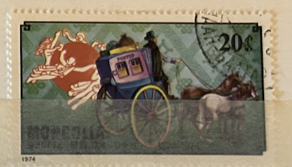
| SOURCE | TITLE| IMAGE MATCH | click to source page |
| eBay | Scott 3131 32 Cents State Coach David Peterman Hand Painted FDC 34 of 40 | eBay | 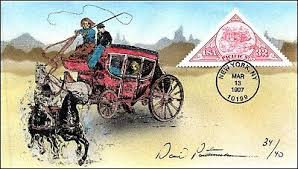 |
| eBay.de | ag7301 - GERMANY - Set of 2 pieces MAXIMUM CARD - 16.10.1986 - Transport | eBay.de | 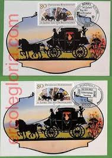 |
| Филателия България | Catalog of Bulgarian Postage Stamps for BC "4614" - "Carriages, carriages, carts" - four postage stamps and a special postal stamp. | 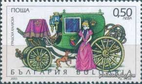 |
| Delcampe | Calendars - Pocket calendar, Russian Post XIX century, horses, 1992 | 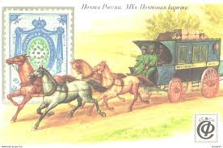 |
| Invaluable.com | Sold at Auction: [MOVEABLES] CARRIAGE SCENE. A SERIES OF EIGHT FRENCH EROTIC POSTCARDS | 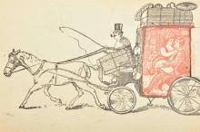 |
| Amazon.com | Amazon.com: FRD (FR.Germany) WZd8 unmounted Mint/Never hinged ** MNH 1985 Mophila (Stamps for Collectors) Horses/Zebras : Toys & Games | 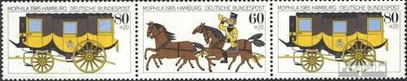 |
| Blogger.com | English Historical Fiction Authors: Cameos, Silhouettes and Cartes de Visite | 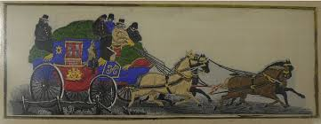 |
| Avion Thematics | Staffa 1977 Land Speed Records (James's Steam Carriage) Imperf Souvenir Sheet (£1 Value) Cto Used, stamps on transport, stamps on cars | 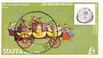 |
| eBay | Timbre neuf de 1966 Yt 1517 Douanier Henri Rousseau la carriole du père Juniet | eBay | 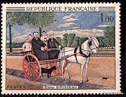 |
| Stamps Russia 2011 - 300 years to the Moscow Post Office - Stamp: Postage stagecoach | 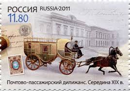 | |
| Colnect | Stamp: Mail Coach (United Kingdom of Great Britain & Northern Ireland(Royal Mail 500 (1st issue)) Mi:GB 3847,Sn:GB 3474,Yt:GB 4261,Sg:GB 3799,AFA:GB 4007,Un:GB 4472 📮 | 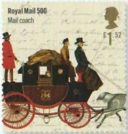 |
| eBay | AOP Promotional calendar 1992 RUSSIAN COIN | eBay | 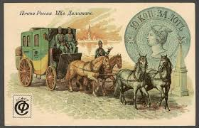 |
| Look and Learn History Picture Archive | Mail Coach Attacked by a Lioness stock image | Look and Learn | 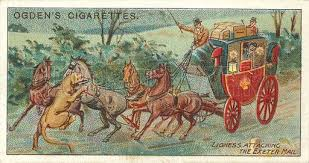 |
| The International Heyer Society | POLL: Favourite Heyer Non-Fiction – The International Heyer Society | 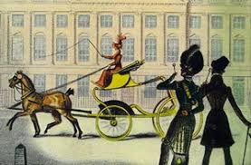 |
| eBay | French Horses Postal Stamps for sale | eBay | 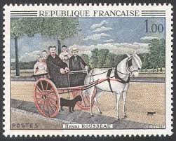 |
| The Art Institute of Chicago | "The Good Old Days" (Royal Mail Coach)" | The Art Institute of Chicago | 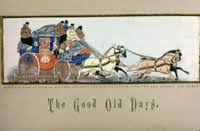 |
| Freestampcatalogue.com | Stamps from Armenia - Freestampcatalogue.com - The free online stampcatalogue with over 500.000 stamps listed. | 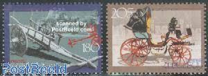 |
| Филателия България | Catalog of Bulgarian Postage Stamps for BC "4613-4616" - "Carriages, carriages, carts" - four postage stamps and a special postal stamp. | 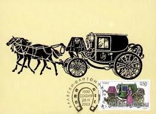 |
| eBay | Horses Used Polish Stamps for sale | eBay | 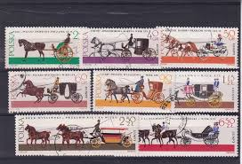 |
| eBay | Beautiful Victorian Die Cuts Double-sided Scrapbook Page w/ Horse & Carriage * | eBay | 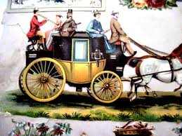 |
| iStock | Usa Postage Stamp Stock Photo - Download Image Now - Business, Business Finance and Industry, Color Image - iStock | 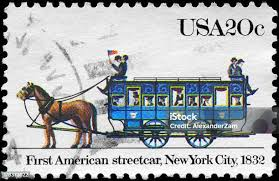 |
| TikTok | Sending Love Through Postcards from Around the World | TikTok | 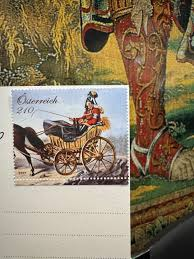 |
| eBay | 423544/ Reklamemarke – Brautwagen - Landshuter Bisquit- u. Keksfabrik | eBay | 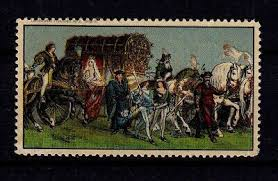 |
| eBay | FRANCE -1967- Henri Rousseau (1844-1910) The Father's Cart Juniet 😀 MNH - #1172 | eBay | 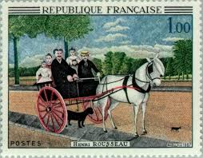 |
| Blazing Heart Cards | Turner & Fisher Cards of Fortune | Blazing Heart Cards | 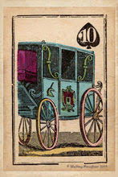 |
| Филателия България | Catalog of Bulgarian Postage Stamps for 2003 year. | 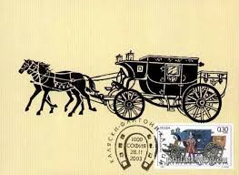 |
| eBay | AOP Promotional calendar 1992 RUSSIAN STAMP | eBay | 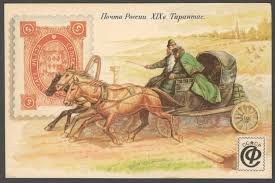 |
| Find Your Stamps Value | Weltweiter Briefmarkenkatalog | 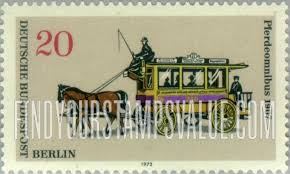 |
| stampsandstuff.net | Stamps from Poland 1960-1969 | 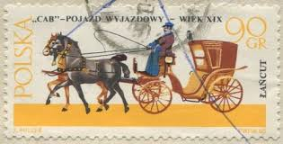 |
| Bridgeman Images | Image of The lazy kings of the merovingian dynasty. Engraving in “Histoire | 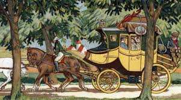 |
| The Glasgow Coach by Cecil Alden | 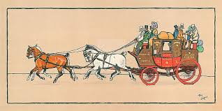 | |
| eBay | ARMENIA Cat#255-6 Traditional Armenian Handicrafts Transportation Scott #643 | eBay | 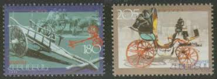 |
| eBay | Russia USSR 1981 Transportation set of 6 (Scott 5001-5006) Maximum card | eBay | 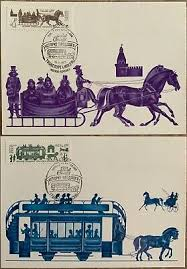 |
| eBay | 1940s Full Length Open Carriage Pulled by Two Horses Driver w/ Top Hat Matchbook | eBay | 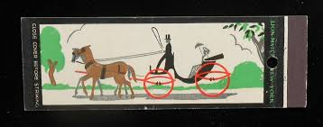 |
| bramanswanderings.com | Old Christmas | Braman's Wanderings | 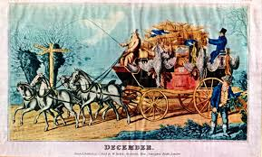 |
| eBay | PARIS FRANCE POUDRE ET CIGARETTES D'ABYSSINIE EXIPARD OLD ADVERTISING POSTCARD | eBay | 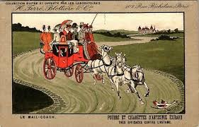 |
| Gallery Direct Art | Cecil Aldin Hand Numbered Limited Edition Print on Paper :"Stagecoach I" - Cecil Aldin | 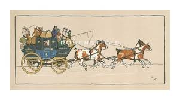 |
| eBay | Joseph Hauser WINES, LIQUORS & Segars, 149 Pearl St., NYC Victorian Trade Card | eBay | 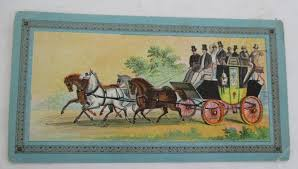 |
| iStock | One Horse Cart On A Polish Stamp Stock Photo - Download Image Now - Adult, Carriage, Horizontal - iStock | 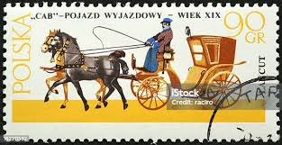 |
| stampsandstuff.net | Stamps from Poland 1980-1989 | 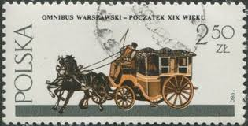 |
| Bridgeman Images | Image of Post chaise | 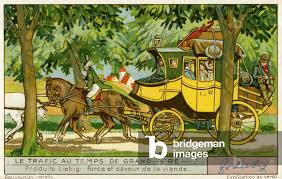 |
| eBay | Armenia 2001 Traditional Handicrafts Phaeton Horse-drawn carriage Transport MNH | eBay | 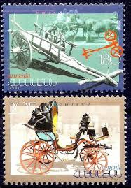 |
| Agriturismo Alle Ruote | Agriturismo Alle Ruote | 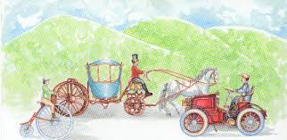 |
| eBay | Travelstamps:1981 Russia Stamps Sc #5003 MNH 19th -20th Century Transportation | eBay | 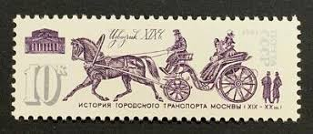 |
| Find Your Stamps Value | Value of journee du timbre stamps | 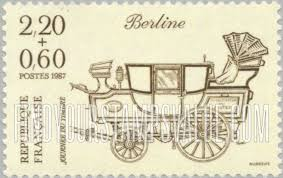 |
| napacofood.com | FRANCE COLONIES | 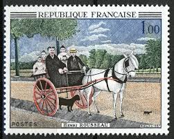 |
| eBay | Belgium 1963, Stamp day set MNH, Mi 1309 | eBay | 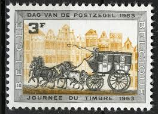 |
| Media Storehouse | 18th Century Fliguette and Vinaigrette Print (Chromolitho). Art Prints, Posters & Puzzles from Fine Art Finder | 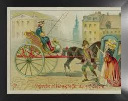 |
| igpc.com | IGPC - The world's largest philatelic network | 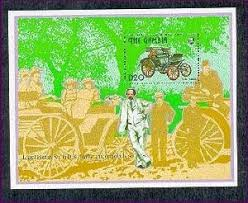 |
| iStock | Single Horse Cart On An Old Polish Postage Stamp Stock Photo - Download Image Now - Adult, Animal, Horizontal - iStock | |
| MutualArt | Eric George Fraser | All Auction Results | |
| eBay | STAMP US SCOTT C29 "Transport Plane" 20 CENT MH 1941 | eBay | |
| MutualArt | Cecil Aldin | Liverpool coach | MutualArt | |
| Find Your Stamps Value | Value of liverpool and manchester railway 1830 stamps | |
| eBay | Russia Scott 5003 MNH | eBay | |
| Colnect | Stamp: Carriages (to 1595), diligence (1750) (Germany, Democratic Republic (DDR)(500 years international postal routes in Europe) Mi:DD 3356,Sn:DD 2843,Yt:DD 2959,Sg:DD E3052,Un:DD 3356 📮 | |
| eBay | ag7426 - GERMANY - SET OF 2 MAXIMUM CARD - 1985 - Transport | eBay | |
| Invaluable.com | Sold at Auction: Cecil Charles Windsor Aldin, Cecil Aldin (1870-1935) Mail coaches Perth Aberdeen and London Plymouth, 12.5 x 26.5in. | |
| eBay | 1888 N90 Duke Vehicles of the World "Victoria" VG **AA-9080** | eBay | |
| eBay | France 1967 Old Juniet's Trap by Rousseau Paintings Art Horse Dog Carriage MNH | eBay |